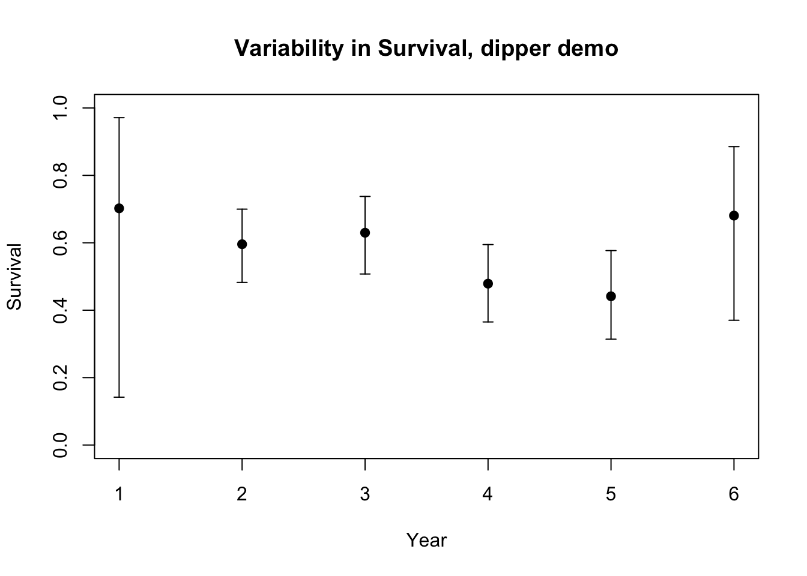

Estimando los Parametros
BIOL4558
Agosto 2021
Estimación de parámetros para modelos de población de vida silvestre.
Ahora hemos pasado por la mecánica básica del modelado de poblaciones. ¡Pero apenas hemos discutido de dónde provienen las estimaciones de los parámetros!
¡Este es el tema central de la conferencia actual!
Requerimientos de datos
Modelos escalares (sin estructura de edad)
- Abundancia inicial (\(N_0\))
- Tasa media de crecimiento de la población (\(r\) or \(r_{max}\))
- Variación en la tasa de crecimiento de la población (desviación estándar de una distribución normal que representa la estocasticidad ambiental)
- Capacidad de carga (accareo) de la población (\(K\); abundancia de equilibrio del modelo logístico)
Modelos estructurados por etapas (historia de vida)
- Abundancia inicial(\(\mathbf{N_0}\)) (vector de abundancias iniciales para todas las etapas)
- Tasas vitales específicas de la etapa (fecundidad, supervivencia; complete una matriz de transición)
- Variación temporal en las tasas vitales específicas de la etapa (estocasticidad ambiental)
- Dependencia de las tasas vitales de la densidad (p. Ej., Cómo disminuye la fecundidad a medida que la población se vuelve más poblada)
- ¿Qué tasas vitales dependen de la densidad?
Modelos de metapoblación (espaciales)
- Distribuciones espaciales de parches de hábitat adecuados (definir parches)
- Variación espacial en las tasas vitales (por ejemplo, variación en la calidad del hábitat entre diferentes parches)
- Correlación en estocasticidad ambiental entre parches.
- Tasas de dispersión entre parcelas de hábitat.
- Requisitos de hábitat de diferentes etapas de la vida.
- Para modelos de metapoblación “clásicos”: tasas de colonización y extinción en parcelas de hábitat
¡Fuentes de datos!
Tablas de vida
Como recordará, las tablas de vida clásicas representan un solo cohorte que se ha seguido a lo largo del tiempo hasta que la última ha muerto.
NOTA: en la práctica, es casi imposible seguir uno solo cohorte a lo largo del tiempo en la naturaleza (aunque las tablas de vida están comúnmente disponibles para las poblaciones en cautiverio). Por lo tanto, en la práctica, la mayoría de las tablas de vida publicadas para las poblaciones silvestres utilizan la tabla de vida estática , que compara el tamaño de la población de múltiples cohortes diferentes (en todo el rango de edades), en un solo punto en el tiempo. Las tablas de vida estáticas asumen que la población tiene una estructura de edad estable, es decir, la proporción de individuos en cada clase de edad no cambia de generación en generación. Este supuesto a menudo se viola en poblaciones naturales, pero en ausencia de mejores datos, ¡este método puede ser mejor que nada!
| x | S(x) | b(x) | l(x) | g(x) |
|---|---|---|---|---|
| 0 | 500 | 0 | 1.0 | 0.80 |
| 1 | 400 | 2 | 0.8 | 0.50 |
| 2 | 200 | 3 | 0.4 | 0.25 |
| 3 | 50 | 1 | 0.1 | 0.00 |
| 4 | 0 | 0 | 0.0 | NA |
PROS
- Resumen de los programas de supervivencia y fecundidad, a menudo disponible en la literatura. ¡Tenga cuidado al utilizar datos de poblaciones cautivas!
CONS - Hace suposiciones poco realistas (especialmente el método * tabla de vida estática *). - No se puede utilizar para estimar la estocasticidad ambiental. - No se puede utilizar para estimar la dependencia de la densidad - Ignora la detección imperfecta y el hecho de que algunas clases de edad son menos detectables que otras - Recuerde, no siempre es perfectamente sencillo traducirlo en un modelo de población basado en matrices (estructurado por edad), ¡pero se puede hacer!
¡Datos del censo!
¡Los datos del censo son, en última instancia, lo que todos ** deseamos ** tener! Significa que seguimos una población a lo largo del tiempo y sabemos exactamente cuántos individuos de cada etapa hay en la población cada año. Tenemos * detección perfecta !!!! *
En este caso, calcular la supervivencia y la fecundidad (y la variación de estos parámetros y la dependencia de la densidad) es relativamente sencillo.


PROS - Puede estimar la supervivencia y la fecundidad, env. estocasticidad, dependencia de la densidad, ¡prácticamente todo lo que queremos para un modelo de población!
- Muy raramente (si es que alguna vez) disponible !!
- Ignora la ** detección imperfecta ** (asume una detección perfecta), que casi siempre no es realista.
Capture-mark-recapture (CMR)
PROS - Puede estimar supervivencia, variación en supervivencia, lambda, reclutamiento, tasas de dispersión. - ¡Probablemente la fuente de datos más utilizada para modelos de población!
CONS - Pocas desventajas, aunque las técnicas analíticas pueden ser difíciles de dominar - Montar un estudio CMR adecuado puede resultar muy costoso y requerir muchos años de datos. - La estimación de los movimientos a escala del paisaje puede requerir un estudio aún más costoso y que requiere más tiempo. - En muchos casos, la emigración y la supervivencia pueden ser difíciles de separar.
¡Vea más abajo para más! Además, este es el enfoque principal del curso de Dinámica de la población (NRES 488, ¡el próximo curso en la secuencia de Ecología y Conservación de la Vida Silvestre!)
Datos sobre estructura espacial / hábitat
- Vea links en la página de proyectos finales
¿Qué pasa si “no hay datos”?
Recuerda el “Stone Soup” analogy! - incluso cuando crea que no hay datos, ¡probablemente haya más de los que parece inicialmente!
- Usar álgebra para construir una matriz de transición estructurada por edades completa a partir de la información disponible.
- Por ejemplo, nos falta información sobre la supervivencia de las crías. Solo sabemos:
- Tasas de supervivencia de jóvenes y adultos
- Éxito de anidación
- El crecimiento de la población (lambda) es 1.09
- ¡Ahora podemos resolver la supervivencia de las crías!
- Para un ejemplo de esto, ver [Congdon et al 1993] (congdon et al 1993.pdf)
- Por ejemplo, nos falta información sobre la supervivencia de las crías. Solo sabemos:
- ¡Simplifica! (Los modelos son siempre representaciones simplificadas de la realidad)
- ¿Ignora la estructura de edad? (es decir, use el modelo escalar)
- ¿Ignora la dependencia de la densidad?
- Ignore las interacciones tróficas (¡generalmente hacemos esta simplificación de todos modos!)
- Ignorar la abundancia por completo (por ejemplo, utilizar el modelo de metapoblación clásico)
- Estrategias conservadoras (use * el peor de los casos *)!
- El modelo independiente de la densidad es conservador, por lo que si no tiene datos en D-D, ¡tal vez simplemente ignórelo!
- Con incertidumbre de los parámetros, utilice el peor de los casos
- Bajo tendencias de declive, use el peor de los casos
- ¡Utilice datos de especies similares!
- Por ejemplo, las especies de tamarinos tienen historias de vida similares, así que utilice datos sobre titíes león dorado para modelar los titíes león con cabeza dorada.
- Opinión experta
- Vea abajo…
- Bases de datos nacionales
- Vea links en la página de proyectos finales
- Allometries
- por ejemplo, la alometría de Fenchel
- Este tipo de pensamiento (que busca patrones amplios entre especies) a menudo se denomina “macroecología”.


Aparte, ¿se puede utilizar la opinión de un experto?
- No es ideal, porque es difícil o imposible de validar y difícil de documentar, pero …
- ¡Eso es lo que se hará en cualquier caso!
- Y es mejor usarlo que no hacer nada
- Y es mejor documentar que se utilizó la opinión de expertos que proceder con la planificación de la conservación en ausencia de fuentes y supuestos establecidos.
- Es un punto de partida (y a veces uno razonable)
Análisis de captura-marca-recaptura (CMR): Capture-mark-recapture (CMR) analysis

Parámetros PVA estimables a partir de datos CMR
- Tasa de supervivencia (posiblemente estructurada por edad o tamaño)
- Fecundidad (entrada de nuevos individuos en la población)
- Reclutamiento (ingreso de nuevos individuos a la población adulta)
- abundancia
- Lambda (tasa de crecimiento finita)
- Influencias ambientales en las tasas de supervivencia y fecundidad.
- Varianza del proceso temporal (estocasticidad env.)
- Tasas de dispersión
Los datos necesarios para el análisis CMR: historiales de captura
Considere un proyecto diseñado para monitorear una población de caimanes. Estos caimanes fueron monitoreados durante cuatro años, desde 1976 hasta 1979.
Cada fila de la siguiente tabla representa un historial de capturas posible único:
Un “1” indica que un animal fue capturado con éxito en un año determinado y posteriormente liberado.
Un “0” indica que un animal no fue capturado con éxito en un año determinado.
Un “2” indica que un animal fue capturado con éxito en un año determinado, pero no fue devuelto a la población (probablemente murió debido a la manipulación o captura).

Dos tipos principales de análisis CMR
Modelos poblacionales cerrados
Suponemos que la población está cerrada (¡sin procesos BIDE!). Es decir, ¡la abundancia no cambia! ¡Intentamos estimar la abundancia!
- Sin mortalidad
- Sin nacimientos
- Sin inmigración
- Sin emigración
- Todos los individuos son observables (pero no necesariamente observados …)

Parámetros estimados:
- abundancia
M = el número de individuos marcados en la primera muestra C = número total de individuos capturados en la segunda muestra R = número de individuos en la segunda muestra que están marcados
Podemos usar la siguiente fórmula para estimar la abundancia (el estimador lincoln-peterson ):
\(N = \frac{M \times C}{R}\)
Modelos de población abiertos
Suponemos que la población está abierta a uno o más de los procesos BIDE. Es decir, ¡la abundancia PUEDE cambiar! Intentamos estimar los procesos que impulsan el cambio de abundancia (a menudo, tasas de supervivencia)
- Poblaciones abiertas al nacimiento, la muerte y posiblemente incluso la migración (la abundancia puede cambiar durante el estudio).
- Permite la estimación de los impulsores de la dinámica de la población durante períodos de tiempo prolongados
- A menudo de gran interés para ecologistas y gestores.
Máxima verosimilitud: ¡un marco para la inferencia estadística!
PARA ANÁLISIS CMR : - ¿Qué valor de supervivencia maximiza la probabilidad de generar los historiales de captura observados?
EJEMPLO:
Considere el siguiente historial de captura de una sola persona:
1 0 1 1Este individuo fue marcado y liberado en la captura inicial. No se capturó en la siguiente encuesta, pero luego se capturó en cada una de las siguientes dos encuestas posteriores.
¿Cuál es la probabilidad de observar este historial de capturas?
[(Probabilidad de sobrevivir del tiempo 1 al 2) X (Probabilidad de no ser visto en el momento 2)] X [(Probabilidad de sobrevivir del tiempo 2 al 3) X (Probabilidad de ser visto en el momento 3)] X [(Probabilidad de sobrevivir del tiempo 3 al 4) X (Probabilidad de ser visto en el tiempo 4)]
-> [(Probability of surviving from time 1 to 2) X (Probability of not being seen at time 2)] X [(Probability of surviving from time 2 to 3) X (Probability of being seen at time 3)] X [(Probability of surviving from time 3 to 4) X (Probability of being seen at time 4)]
Esto se puede escribir:
\(L_1 = \phi_1(1-p_2) \cdot \phi_2p_3 \cdot \phi_3p_4\)
¿Qué tal el siguiente historial de captura para una sola persona?
1 0 1 0¿Cuál es la probabilidad de observar este historial de capturas?
[(Probabilidad de sobrevivir del tiempo 1 al 2) X (Probabilidad de no ser visto en el momento 2)] X [(Probabilidad de sobrevivir del tiempo 2 al 3) X (Probabilidad de ser visto en el momento 3)] X
-> [(Probability of surviving from time 1 to 2) X (Probability of not being seen at time 2)] X [(Probability of surviving from time 2 to 3) X (Probability of being seen at time 3)] X
– either –
[(Probability of surviving from time 3 to 4) X (Probability of not being seen at time 4)]
– or –
[(Probability of NOT surviving from time 3 to 4)
Esto se puede escribir:
\(L_1 = \phi_1(1-p_2) \cdot \phi_2p_3 \cdot \left \{(1-\phi_3)+\phi_3(1-p_4) \right \}\)
P : si la supervivencia fuera del 100% y la probabilidad de captura fuera del 100%, ¿cuál es la probabilidad de observar los historiales de captura anteriores?
P : ¿y si la supervivencia fuera del 100% y la probabilidad de captura fuera del 75%?
La estimación de máxima verosimilitud es el proceso de encontrar los valores de los parámetros $ phi $ y $ p $ que serían más * probables * para generar los historiales de captura observados.
Este modelo se conoce como el modelo Cormack-Jolly-Seber (CJS) y es el análisis más común realizado por el programa MARK.
*P **: ¿Por qué $ phi $ también se conoce como supervivencia “aparente”? ¿Por qué no es la “verdadera” supervivencia ???
Supuestos clave del modelo CJS
- Todos los individuos de la población son igualmente detectables en cada ocasión de muestreo (cada sesión de captura representa una muestra totalmente aleatoria de la población)
- Los topógrafos no pierden ni pierden las marcas
- Toda emigración es permanente (equivalente a una mortalidad)
Program MARK
MARK es un motor numérico de máxima verosimilitud diseñado para el análisis de marcado-recaptura. Ingresa un conjunto de datos del historial de captura y MARK generará resultados como la tasa de supervivencia y la probabilidad de captura.
¡Ejemplo de un análisis de marcado-recaptura de población abierta!
¡Repasemos un análisis CJS en R! Para seguir adelante, por favor guarde este script y cárguelo en Rstudio.
NOTA: este análisis incluye tanto hombres como mujeres (a diferencia del ejemplo del laboratorio 7), por lo que los resultados se verán algo diferentes.

Los datos del cazo europeo son EL ejemplo clásico de un conjunto de datos CMR. ¡Veámos!
###########
# Cormack-Jolly-Seber (CJS) model in R
###########
library(marked) # install the 'marked' package if you haven't already done this!## Warning: package 'marked' was built under R version 3.6.3## Loading required package: lme4## Loading required package: Matrix## Loading required package: parallel## This is marked 1.2.6data("dipper")
head(dipper,10)## ch sex
## 1 0000001 Female
## 2 0000001 Female
## 3 0000001 Female
## 4 0000001 Female
## 5 0000001 Female
## 6 0000001 Female
## 7 0000001 Female
## 8 0000001 Female
## 9 0000001 Female
## 10 0000001 FemaleAquí usamos el paquete “marked” en R (en lugar de MARK) para hacer la estimación del parámetro ML.
##########
# load data!
data(dipper)
#############
# Process data
dipper.proc=process.data(dipper,model="cjs",begin.time=1) # Helper function- process the data for CJS model## 255 capture histories collapsed into 53dipper.ddl=make.design.data(dipper.proc) # another helper function- process data!
##########
# Fit models
# fit time-varying cjs model
capture.output(suppressMessages( # note: this is just to suppress messages to avoid cluttering the website...
mod.Phit.pt <- crm(dipper.proc,dipper.ddl,model.parameters=list(Phi=list(formula=~time),p=list(formula=~time)),method="Nelder-Mead",hessian = T)
),file="temp.txt")
mod.Phit.pt # print out model##
## crm Model Summary
##
## Npar : 12
## -2lnL: 657.0644
## AIC : 681.0644
##
## Beta
## Estimate se lcl ucl
## Phi.(Intercept) 0.75646636 0.6570806 -0.5314116 2.0443444
## Phi.time2 -0.99255899 0.7541098 -2.4706142 0.4854962
## Phi.time3 -0.84151202 0.6991672 -2.2118797 0.5288557
## Phi.time4 -0.22522075 0.7051952 -1.6074034 1.1569619
## Phi.time5 -0.36893542 0.6974964 -1.7360284 0.9981576
## Phi.time6 0.10115137 1.5063624 -2.8513189 3.0536216
## p.(Intercept) 1.00571207 0.8006508 -0.5635635 2.5749876
## p.time3 1.49463757 1.3119503 -1.0767850 4.0660601
## p.time4 1.37853596 1.0927336 -0.7632220 3.5202939
## p.time5 1.12053506 0.9914942 -0.8227937 3.0638638
## p.time6 1.57229762 1.0715540 -0.5279483 3.6725435
## p.time7 0.07823848 1.7821210 -3.4147187 3.5711956mod.Phit.pt$results$AIC # extract AIC## [1] 681.0644########
# fit time-invariant cjs model
capture.output(suppressMessages(
mod.Phidot.pdot <- crm(dipper.proc,dipper.ddl,model.parameters = list(Phi=list(formula=~1),p=list(formula=~1)),method="Nelder-Mead",hessian = TRUE)
),file="temp.txt")
mod.Phidot.pdot##
## crm Model Summary
##
## Npar : 2
## -2lnL: 666.8377
## AIC : 670.8377
##
## Beta
## Estimate se lcl ucl
## Phi.(Intercept) 0.2422903 0.1020150 0.04234102 0.4422397
## p.(Intercept) 2.2261889 0.3251153 1.58896300 2.8634148mod.Phidot.pdot$results$AIC## [1] 670.8377########
# fit sex-dependent cjs model
capture.output(suppressMessages(
mod.Phisex.psex <- crm(dipper.proc,dipper.ddl,model.parameters = list(Phi=list(formula=~sex),p=list(formula=~sex)),method="Nelder-Mead",hessian = TRUE)
),file="temp.txt")
mod.Phisex.psex##
## crm Model Summary
##
## Npar : 4
## -2lnL: 666.1518
## AIC : 674.1518
##
## Beta
## Estimate se lcl ucl
## Phi.(Intercept) 0.22338784 0.1440981 -0.05904451 0.5058202
## Phi.sexMale 0.04138178 0.2041878 -0.35882631 0.4415899
## p.(Intercept) 2.01072100 0.4210671 1.18542943 2.8360126
## p.sexMale 0.47587463 0.6630165 -0.82363774 1.7753870mod.Phisex.psex$results$AIC## [1] 674.1518###########
# compare all models with AIC
###########
######
# Set up models to run (must have either "Phi." or "p." in the name)
Phi.dot <- list(formula=~1)
Phi.time <- list(formula=~time)
Phi.sex <- list(formula=~sex)
Phi.timesex <- list(formula=~sex+time)
p.dot <- list(formula=~1)
p.time <- list(formula=~time)
p.sex <- list(formula=~sex)
p.timesex <- list(formula=~sex+time)
cml=create.model.list(c("Phi","p")) # create list of all models to run
######
# Run all models
capture.output(suppressMessages(suppressWarnings(
allmodels <- crm.wrapper(cml,data=dipper.proc, ddl=dipper.ddl,external=FALSE,accumulate=FALSE,method="Nelder-Mead",hessian=TRUE)
)),file="temp.txt")
######
# AIC model selection
allmodels## model npar AIC DeltaAIC weight
## 1 Phi(~1)p(~1) 2 670.8377 0.000000 0.3792707172
## 2 Phi(~1)p(~sex) 3 672.1934 1.355756 0.1925531715
## 5 Phi(~sex)p(~1) 3 672.6762 1.838541 0.1512568696
## 9 Phi(~time)p(~1) 7 673.7301 2.892463 0.0893015564
## 6 Phi(~sex)p(~sex) 4 674.1518 3.314151 0.0723253541
## 10 Phi(~time)p(~sex) 8 675.1913 4.353613 0.0430104833
## 13 Phi(~sex + time)p(~1) 8 675.6617 4.824056 0.0339952989
## 14 Phi(~sex + time)p(~sex) 9 677.1681 6.330419 0.0160072363
## 3 Phi(~1)p(~time) 7 678.4804 7.642778 0.0083050299
## 4 Phi(~1)p(~sex + time) 8 679.9497 9.112045 0.0039837661
## 7 Phi(~sex)p(~time) 8 680.4921 9.654404 0.0030375415
## 11 Phi(~time)p(~time) 12 681.0644 10.226756 0.0022815888
## 12 Phi(~time)p(~sex + time) 13 681.7032 10.865580 0.0016577483
## 8 Phi(~sex)p(~sex + time) 9 681.8896 11.051978 0.0015102292
## 15 Phi(~sex + time)p(~time) 13 682.9670 12.129303 0.0008812611
## 16 Phi(~sex + time)p(~sex + time) 14 683.6633 12.825655 0.0006221479
## neg2lnl convergence
## 1 666.8377 0
## 2 666.1934 0
## 5 666.6762 0
## 9 659.7301 0
## 6 666.1518 0
## 10 659.1913 0
## 13 659.6617 0
## 14 659.1681 0
## 3 664.4804 0
## 4 663.9497 0
## 7 664.4921 0
## 11 657.0644 0
## 12 655.7032 0
## 8 663.8896 0
## 15 656.9670 0
## 16 655.6633 1#######
# get parameter estimates and confidence intervals for best model
allmodels[[1]]##
## crm Model Summary
##
## Npar : 2
## -2lnL: 666.8377
## AIC : 670.8377
##
## Beta
## Estimate se lcl ucl
## Phi.(Intercept) 0.2422903 0.1020150 0.04234102 0.4422397
## p.(Intercept) 2.2261889 0.3251153 1.58896300 2.8634148allmodels[[11]]##
## crm Model Summary
##
## Npar : 12
## -2lnL: 657.0644
## AIC : 681.0644
##
## Beta
## Estimate se lcl ucl
## Phi.(Intercept) 0.75646636 0.6570806 -0.5314116 2.0443444
## Phi.time2 -0.99255899 0.7541098 -2.4706142 0.4854962
## Phi.time3 -0.84151202 0.6991672 -2.2118797 0.5288557
## Phi.time4 -0.22522075 0.7051952 -1.6074034 1.1569619
## Phi.time5 -0.36893542 0.6974964 -1.7360284 0.9981576
## Phi.time6 0.10115137 1.5063624 -2.8513189 3.0536216
## p.(Intercept) 1.00571207 0.8006508 -0.5635635 2.5749876
## p.time3 1.49463757 1.3119503 -1.0767850 4.0660601
## p.time4 1.37853596 1.0927336 -0.7632220 3.5202939
## p.time5 1.12053506 0.9914942 -0.8227937 3.0638638
## p.time6 1.57229762 1.0715540 -0.5279483 3.6725435
## p.time7 0.07823848 1.7821210 -3.4147187 3.5711956#######
# make predictions and plot them.
predict(allmodels[[1]])$Phi## occ estimate se lcl ucl
## 1 6 0.560278 0.02513307 0.5105837 0.6087926Phi_by_year <- predict(allmodels[[11]])$Phi # predict Phi for all years (based on the best Phi(t) model)
suppressWarnings( suppressMessages( library(Hmisc,quietly = T) )) #load Hmisc package- has a nice error bar function
plot(1:nrow(Phi_by_year),Phi_by_year$estimate,xlab="Year",ylab="Survival",ylim=c(0,1),main="Variability in Survival, dipper demo")
errbar(1:nrow(Phi_by_year),Phi_by_year$estimate,Phi_by_year$ucl,Phi_by_year$lcl,add=T)
¿Cuál es nuestra estimación de supervivencia media?
#######
# Calcule la tasa de supervivencia media de la población.
mean(Phi_by_year$estimate)## [1] 0.5880352¿Qué es la estocasticidad ambiental?
#######
# Calcule la variabilidad ambiental en las tasas de supervivencia anuales.
sd(Phi_by_year$estimate)## [1] 0.1066587